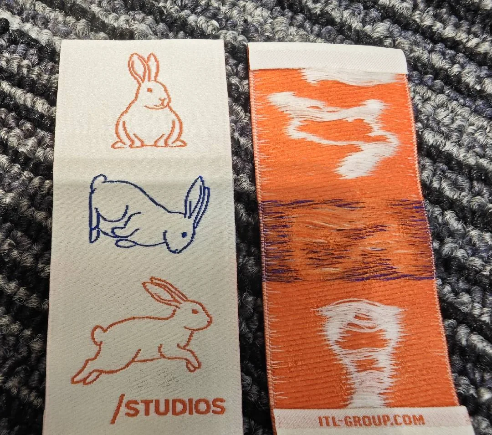

Repeat a label you already run, or start from artwork
Most of the cost difference between two woven label quotes is not the label — it is whether a weave programme has to be made. Decide which of these two you are before you compare prices.
Repeat an existing programme
You are reordering a label we have woven, or extending it to a new colourway or size that keeps the same construction. The programme is on file, so tooling is already paid for.
- MOQ
- Below 3,000 pcs possible — depends on loom time
- Tooling
- None for the same design
- Sampling
- 5–7 working days on a new colourway
- Bulk
- 7–15 working days
New design from artwork
New brand mark, new layout, a label you have only as a photo, or a construction change. A weave programme is set up once per design and charged once — extra colours are charged per colour.
- MOQ
- 3,000 pcs per design
- Tooling
- Programme set-up, once per design
- Sampling
- 5–7 working days
- Bulk
- 7–15 working days after sample approval
The numbers, before you send an enquiry
These are the terms we quote against. Anything that changes them is listed next to it, so you can see what moves the price and the date rather than guessing.
| Item | What we quote | What changes it |
|---|---|---|
| MOQ | 3,000 pcs per design on a new programme | A repeat design can run lower, because the programme is already on file. Confirm before planning. |
| Sampling | 5–7 working days after artwork and construction are confirmed | Colour count, fold type and how many revisions you need |
| Bulk production | 7–15 working days after sample approval | Quantity, colour count, cut method, and peak season (February–June) when loom time books up |
| Tooling | Weave programme, charged once per design; extra colours charged per colour | Colour count and label width |
| Standard build | 30 × 15 mm finished, satin weave, 3 colours including ground, centre fold, hot-cut ends | This is the specification we cost as standard. Everything else is quoted as a variant. |
| Wash standard | Built to your care cycle; our standard test point is 5 washes with colour fastness grade 4 or better | Detergent, temperature, chlorine or oxygen bleach, industrial laundering |
| Price basis | Per piece, at the quantity you give: 3k / 5k / 10k / 30k / 50k / 100k tiers | Width, colour count, fold, cut edge, yarn type |
| Payment | 30% deposit with the order, 70% before shipment, by T/T | Confirmed on the written quotation |
| Trade terms | FOB Shenzhen / Guangzhou, or EXW on request | Courier for samples is quoted separately |
※ MOQ, lead time and sample terms above are the reference values we quote against; the written quotation for your specification governs.

What we weave
A woven label is the one piece of branding the customer touches every time they put the garment on — and the one that has to survive every wash.
- Main labels — centre-neck brand marks, usually satin or damask, folded
- Size labels — small, high-contrast, often straight cut and sewn into the side seam
- Side and hem labels — longer, flatter labels for branding away from the neck
- Content labels — composition and origin, when the buyer wants it woven rather than printed
| Spec | Typical range |
|---|---|
| Finished size | Standard 30 × 15 mm; smaller from 10 mm wide; larger to 50 × 25 mm and beyond |
| Weaves | Satin, plain (taffeta), damask / jacquard, double-layer |
| Colours | 3–4 standard; up to 12 where the design needs it |
| Folds | Centre fold, end fold, mitre fold, loop fold, straight cut |
| Cut edge | Hot cut, ultrasonic, laser, woven edge |
| Backing | Sew-in, self-adhesive backing, heat-seal on request |
| Artwork | Vector AI / PDF / EPS preferred; Pantone reference for every colour |
From artwork to a box of labels
Six steps, with two points where you approve something before we spend money on tooling.
Artwork check
We read the artwork at finished size, not on screen. Type that will not resolve in the weave is flagged here, while changing it is free.
Construction agreed
Size, fold, cut edge, backing and colour count written down — this becomes the specification the quotation is built on.
Programme & sample
Weave programme set up and a sample woven, 5–7 working days. You get a physical label, not a PDF.
Sample approval
Wash it the way the garment will be washed. Corrections go in before the bulk run, not after.
Bulk
7–15 working days after approval, woven to the approved programme and colour reference.
Inspection & packing
Checked against the approved sample, counted per design, bagged and marked with the style you specify.
What to send with your enquiry
Six items get you a tier price and a date in one reply instead of four emails.
Artwork or a physical sample
AI / PDF / EPS, or the label itself if you already run one. A photo is enough to start a conversation, not enough to programme a loom.
Finished size and fold
The size after folding, plus the fold type and where it is sewn.
Colour count and Pantone
How many weave colours, including the ground. Pantone reference for each.
Quantity and size split
Total per design, and how it splits across sizes and colourways.
Market
US, UK, EU, Japan or Korea — so the content and language can be checked against that market's rules.
In-hand date
The date the labels have to be in your hands, not the date you would like to order.
What gets checked before the carton closes
- Legibility at final size — the smallest letter is read on the woven sample, at the size it will be worn
- Colour fastness — wash and rub checks against the cycle you specified
- Edge integrity — hot-cut or ultrasonic edge sealed, no fraying after washing
- Fold and stitch line — fold position, fold depth and bartack placement against the approved sample
- Colour count — matches the approved label; no substitution of a yarn shade
- Count and packing — pieces per design, per bag, per carton, with the style marking you asked for
Read more in the trims FAQ library: woven label weaves and folds, wash fastness of woven labels, and label content by market.
Questions buyers ask before ordering
What is the minimum order for custom woven labels?
3,000 pieces per design when a new weave programme has to be made. On a repeat design the programme is already on file and a smaller run can sometimes be scheduled around the looms — ask before you plan the order, because it depends on loom time and colour count.
How long does a woven label sample take?
5–7 working days after artwork and construction are confirmed. That covers the weave programme set-up, so it is not the same as printing a paper proof. Bulk then runs 7–15 working days depending on quantity, colour count and cut method.
How small can the text be on a woven label?
It depends on the weave, the yarn count and how many colours you use, so a number given on a screen is meaningless. We weave the smallest type you plan to use into the sample and you judge it on the physical label. If anything will not resolve, we say so before the programme is cut, not after 30,000 labels are woven.
Can you copy a woven label we already have?
Yes, send a physical sample rather than a photo — the weave structure and yarn count can be read from the label itself. If the original programme is not available the label has to be re-programmed, which puts it in the same tooling category as a new design.
Which fold should I choose?
Centre fold for a neck label sewn into the back collar, end fold where both ends are turned under and stitched, mitre fold for a corner-set label, straight cut where the label is sewn flat along one edge. The fold changes the finished size you have to allow for, so agree it together with the size.
Can the label carry composition, origin and care symbols?
Yes, and usually it should. A woven main label can carry the brand mark, size and origin, while composition and care symbols normally go on a separate care label. We check the content and language against the market you ship to before the programme is made.